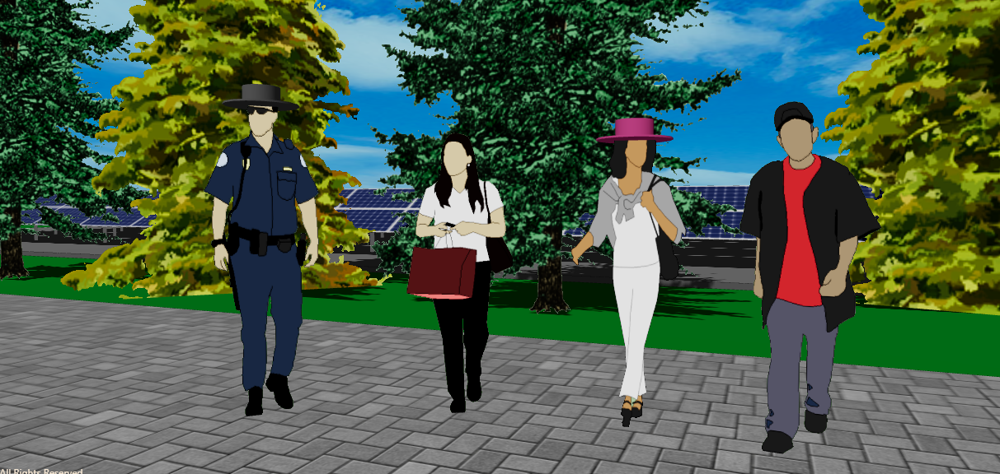
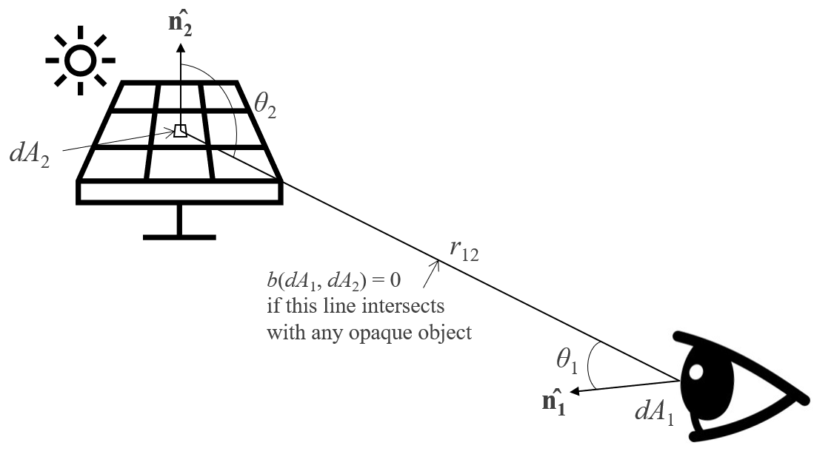
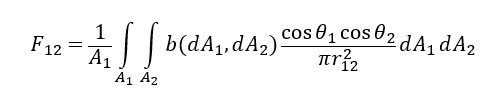
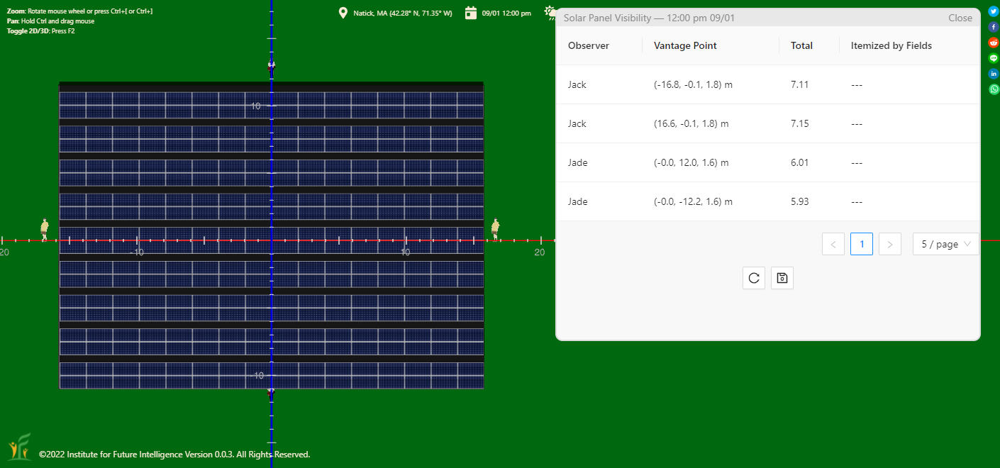
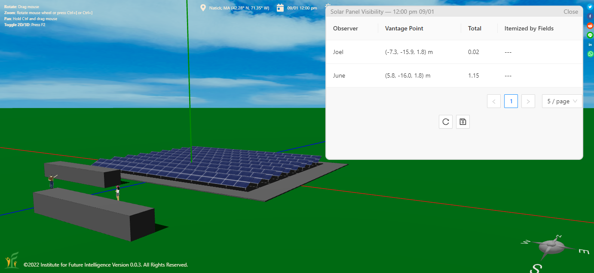
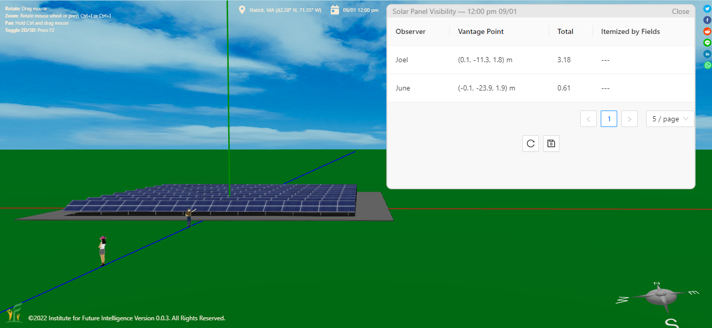
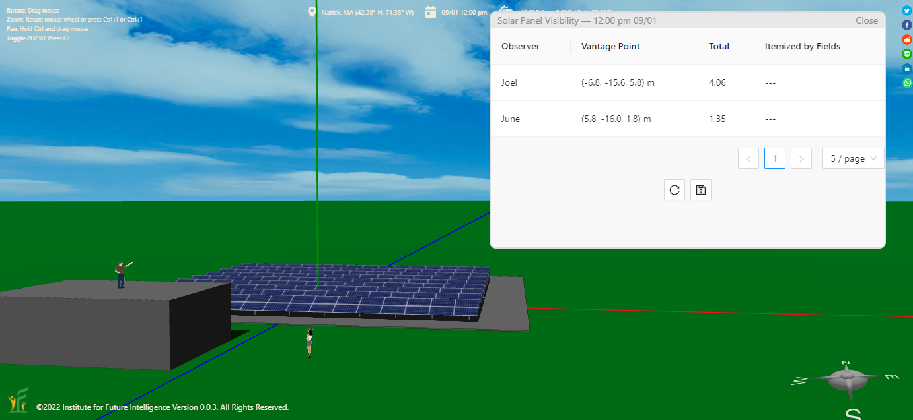
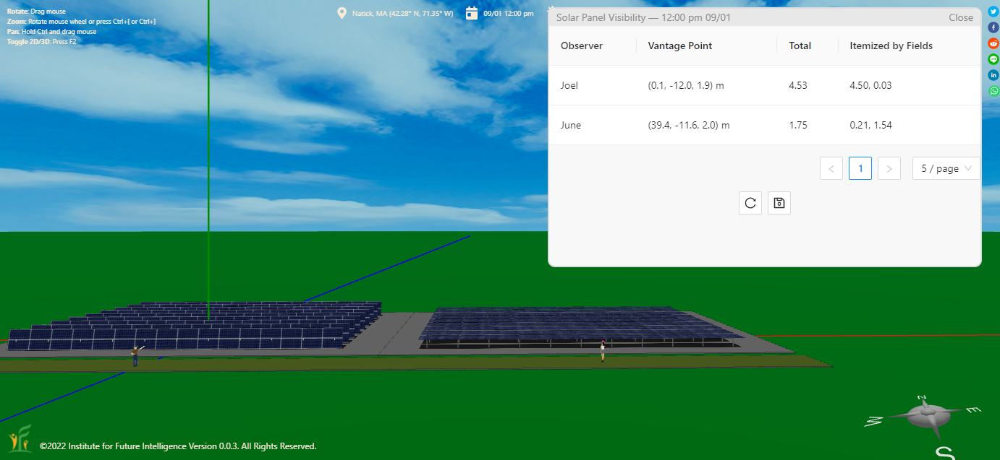
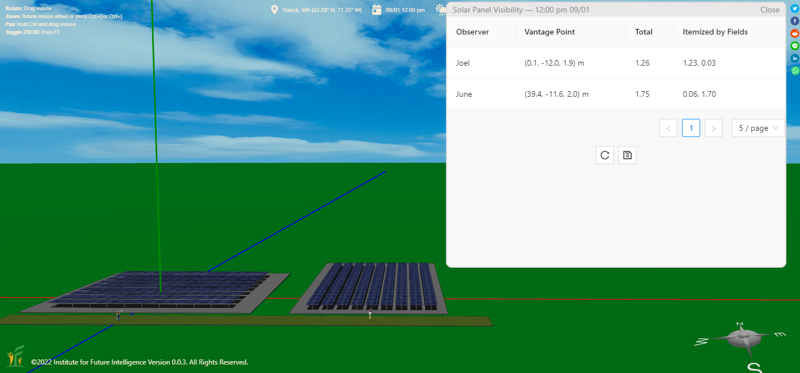

Visibility Analysis of Solar Farms in Aladdin
Quantifying the visual impact of solar farms using the view-factor method, tested across six design variables.
Nimby, the acronym of "not in my back yard," is a phenomenon of opposition by residents to proposed developments in their neighborhoods. The residents are often called Nimbys, and their viewpoint is called Nimbyism. As renewable energy is exploited more widely in our society after nearly two decades of solar and wind booms, social conflicts driven by Nimbyism around what was once deemed a panacea for energy crises start to surge. Renewable energy generation often confronts other basic needs such as food, water, and culture, as its distributed nature demands a lot of space. Engineers must consider these constraints in their work, and develop creative approaches to meet multiple socioeconomic objectives. Students can experiment with landscaping solutions such as planting evergreen trees along the property lines to establish all-season vegetative buffers that mitigate the issues without causing significant shading losses of the solar panels.
To get you started with visibility analysis in Aladdin, we provide a live model above for you to view and play with. There are two observers, Joel and June, in the model who stand at two different vantage points. There is a vegetative buffer between June and the solar farm and no vegetative buffer between Joel and it. To perform a visibility analysis, use "Analysis > Solar Panel > Analyze Visibility" under the Main Menu. The visibility scores from the two observers will be reported as a simulation finishes (at their initial positions, the visibility score measured by Joel is far greater than that by June). Note that the simulation may take a second or two, depending on the speed of your computer.
Add and position observers
Visibility analysis in Aladdin requires adding observers to desired vantage points in a 3D model. In Aladdin, users can add humans and move them anywhere. To make a human an observer, right-click on him or her and select "Observer" from the pop-up menu. If a person becomes an observer, a hat will be drawn on top of his or her head to mark this status, shown as below.

A mathematical model of visibility
In the above model, we know that the observer Joel apparently sees a much larger portion of the solar farm than the other observer June due to the blocking effect of the vegetative buffer. But as engineers, we need to be able to quantify that visual perception. It turns out that we can approximately represent the visibility effect with the so-called view factor between an observer and the solar panels, which can be calculated using the following integral formula:


The greater the view factor is, the more a solar field can be seen by an observer. But how do we know if the view factor can be used to measure visibility reliably? In the following sections, we will present the results of a number of test cases.
The effect of location
The first test is to check if the view factors are about the same if the observers are observing a solar field from approximately symmetric positions. The following screenshot shows that the result passes this test.

The effect of blocking
The next test is to check if the view factor indeed measures a low value if a solar field is blocked from the observer. The following screenshot shows that the result passes this test.

The effect of distance
The further away an observer is from a solar field, the less visible it is to the observer. The following screenshot shows that the result passes this test.

The effect of height
An observer standing at a higher position should see more of a solar field. The following screenshot shows that the result passes this test.

The effect of tilt angle
Solar panels that face the observer more directly are more visible. The following screenshot shows that the result passes this test. This also shows itemized results for each solar fields, in addition to the total scores.

The effect of azimuth
The layout of solar panels affects how visible it is to the observer at a certain position. The situation in this case, in which one of the two solar fields is rotated 90° against the other, is a bit trickier to make sense than other test cases above.

Conclusion
Visibility assessment is becoming an increasingly important part of renewable energy projects. The visibility analysis tool in Aladdin provides a way to quantify the visual impact of such a project on the landscape and neighborhood.
← Back to Aladdin